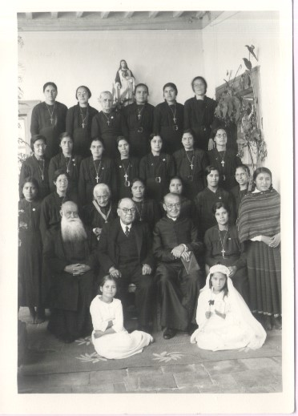
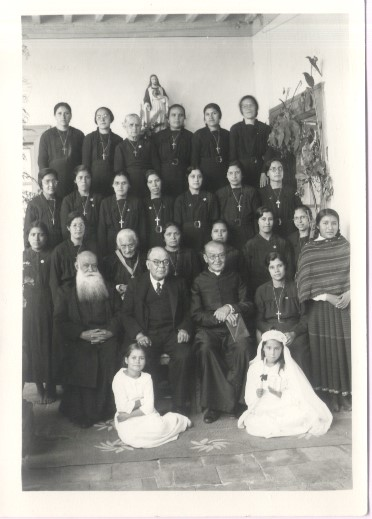

P. Felipe de Jesús Chaparro y Ruiz

Nació el 4 de febrero de 1876 en Temascalcingo, Estado de México,
hijo de Don Jorge Adalberto Chaparro y de Doña Guadalupe Ruiz y Flores,
una familia profundamente católica, quienes lo llevaron a la pila bautismal
el día siguiente de su nacimiento, el 5 de febrero, fecha en que conmemoramos
los católicos al protomártir mexicano San Felipe de Jesús y en honor a este
Santo, se le puso ese nombre.
En muy temprana edad oyó la voz de Dios que lo llamaba al sacerdocio y
siendo aún niño, por disposición de su papá, tuvo que abandonar su casa para
ingresar como interno en el colegio Clerical de San Joaquín situado en la
Ciudad de México, cerca de Tacuba, donde estudió humanidades y latín.
A los 12 años de edad, el 18 de febrero de 1888 se fue a Roma a continuar sus
estudios eclesiásticos en compañía de su hermano mayor Vicente y algunos otros
mexicanos que también partían con el mismo fin.
Los dos hermanos fueron muy bien recibidos, tanto por los maestros,
como por los alumnos y Felipe que no era difícil de congeniar con nadie,
pronto se acomodó al reglamento y disciplina del establecimiento. En el
colegio procuró someterse a la obediencia a los superiores, a vivir en
familia con sus compañeros y a dedicarse a sus estudios con toda
asiduidad, soportando los fuertes dolores de cabeza que le daban
constantemente.
El 23 de diciembre de 1898 recibe el diaconado de manos del
Sr. Sporer Edmundo, obispo de Trebizona, en la Basílica Liberiana,
y el 1º de abril de 1899, sábado Santo, recibió el presbiterado en la
capilla del Colegio Pío Latinoamericano por S. E. el Cardenal Lúcido Mª.
Parochi vicario de SS León XIII. Abandona para siempre la Ciudad Eterna
el 6 de noviembre de 1903

En su pueblo natal, fue nombrado Capellán del Colegio de la Sagrada
familia (hoy escuela particular Mª. Salomé Chaparro) atendido por
las religiosas Hijas de María Inmaculada de Guadalupe, en donde
comenzó a desplegar su celo apostólico, dedicándose a forjar la
conciencia de las niñas que hoy son esposas y madres muy cristianas,
no sólo aquí sino en otras poblaciones, además tuvo mucha delicadeza
en cultivar las vocaciones de señoritas para la vida religiosa que
fueron a distintas comunidades, de manera que la capilla del Colegio
se convirtió en un verdadero santuario dedicado al culto del Sagrado
Corazón de Jesús, para propagar mejor la devoción al Sagrado
Corazón, sembrar la semilla del Evangelio y la cultura cristiana
editó por varios años una revista parroquial titulada
“Tu reinaras” con el apoyo de otros sacerdotes.
Contaba el Padre Felipe de Jesús Chaparro con cuarenta y cuatro años de edad y
veintiuno de sacerdote, cuando su prelado , el Sr. Arzobispo D. José Mora y del
Río, lo nombró Párroco de Temascalcingo su pueblo natal el 16 de diciembre de
1919, desde entonces se dedicó con sus vicarios a visitar los hogares para remediar
las muchas necesidades espirituales que había en ellos, también se propuso
promover en sus fieles las consagraciones personales al Sacratísimo Corazón de
Jesús, invitación que extendió a otros Párrocos.
Tras este visiteo vio las necesidades espirituales y materiales que existían en ellos,
la ignorancia religiosa en que vivían sobre todo los indígenas y compadecido de su
situación sintió que Dios lo elegía para fundar una congregación que le ayudará a propagar
la devoción del Corazón de Jesús, acercando a los indígenas al Corazón de Cristo,
desde 1929 existen las Misioneras del Corazón Eucarístico de Jesucristo Rey, como
catequistas y como religiosas hasta 1943
 

Como premio a su vida de fe, sacrificio y entrega, Dios en sus admirables designios
tuvo a bien hacerlo participe de la patria eterna un viernes primero, el 6 de enero
de 1961
Mi vida declina, mis fuerzas se debilitan, mi espíritu se angustia y
desfallece, como el tuyo en Getsemaní, por eso unido a Ti y como Tú
clamo al Padre Celestial: “Padre, si es posible, pase de mí este cáliz”,
pero no, Jesús mío: lo que Tú quieras, no aspiro a otra cosa, más que al
cumplimiento de tu voluntad soberana. Si toda mi vida Sacerdotal ha sido
tuya, tuyos con mayor razón han de ser los últimos días de mi existencia.
¡Ábreme Jesús mío, las puertas de tu Corazón...! ¡Qué yo more con mis hijas,
en ese nido de amor, en esa escuela de santidad... en esa mansión de
felicidad y de paz! ¡Yo moriré! Pero seguiré viviendo en el Corazón de
mis hijas, seguiré viviendo en su amor, en su gratitud, en su espíritu,
en sus virtudes, en sus trabajos y en sus triunfos. Nuestro Padre Fundador.